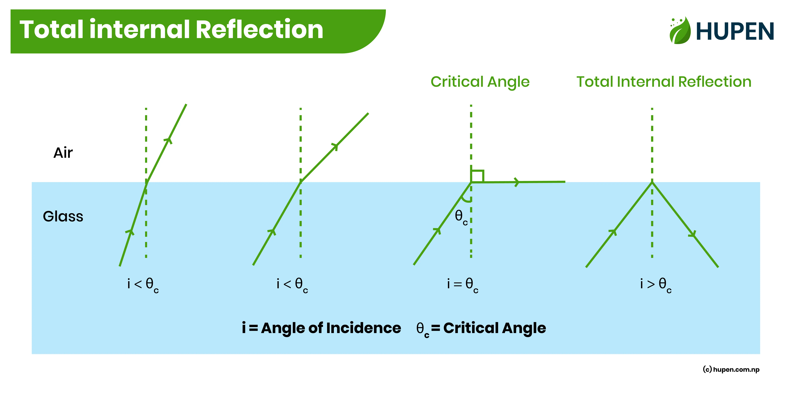
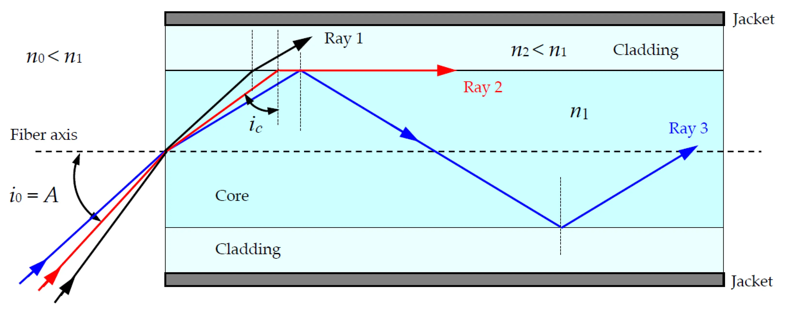

Total Internal Reflection (TIR)
Total Internal Reflection (TIR) သည် Optical Fiber ၏ အလုပ်လုပ်ပုံကို နားလည်ရန် အရေးကြီးသော အခြေခံ Optical Principle တစ်ခုဖြစ်သည်။
Optical Fiber သည် Electrical Signal အစား Light ကို အသုံးပြု၍ Data များကို ပို့ဆောင်ပေးသည်။ ထိုအလင်းသည် Fiber အတွင်းတွင် မိမိလိုချင်သည့် လမ်းကြောင်းအတိုင်း ဆက်လက်သွားနိုင်ရန်အတွက် Total Internal Reflection ၏ အခြေခံသဘောတရားသည် အရေးပါသည်။
Total Internal Reflection ဆိုတာ ဘာလဲ
အလင်းရောင်သည် Refractive Index မတူညီသော Material နှစ်ခုကြားသို့ ဖြတ်သန်းသည့်အခါ အလင်း၏ လမ်းကြောင်းသည် ပြောင်းလဲနိုင်သည်။ ထိုဖြစ်စဉ်ကို Refraction ဟုခေါ်သည်။
သို့သော် အလင်းသည် ပိုမိုမြင့်မားသော Refractive Index ရှိသည့် Medium မှ နိမ့်သော Refractive Index ရှိသည့် Medium သို့ သွားသောအခါ၊ အလင်းကျရောက်သည့်ထောင့် (Angle of Incidence) သည် သတ်မှတ်ထားသော Critical Angle ထက် ကြီးလာပါက အလင်းသည် ဒုတိယ Medium ထဲသို့ မဝင်တော့ဘဲ ပထမ Medium အတွင်းသို့ ပြန်လည်ရောင်ပြန်သည်။
ဤဖြစ်စဉ်ကို Total Internal Reflection (TIR) ဟုခေါ်သည်။

အလင်းသည် Critical Angle ထက် ကျော်လွန်သောအခါ Total Internal Reflection ဖြစ်ပေါ်ပုံ
TIR ဖြစ်ရန် လိုအပ်သော အခြေအနေများ
Total Internal Reflection ဖြစ်ရန် အဓိကအခြေအနေ နှစ်ခုရှိသည်။
- အလင်းသည် ပိုမိုမြင့်မားသော Refractive Index (n) ရှိသည့် Medium မှ နိမ့်သော Refractive Index ရှိသည့် Medium သို့ သွားရမည်။
- Angle of Incidence သည် Critical Angle ထက် ကြီးရမည်။
Critical Angle တွင် အလင်းသည် နယ်နိမိတ်တစ်လျှောက်သို့ သွားသကဲ့သို့ ဖြစ်ပြီး Critical Angle ထက် ပိုမိုကြီးလာသောအခါ TIR ဖြစ်ပေါ်သည်။
Refractive Index ဆိုတာ ဘာလဲ
Refractive Index (n) သည် Material တစ်ခုအတွင်း အလင်း၏ အမြန်နှုန်းသည် Vacuum ထဲရှိ အလင်း၏ အမြန်နှုန်းနှင့် နှိုင်းယှဉ်ပါက မည်မျှလျော့ကျသွားသည်ကို ဖော်ပြပေးသော အတိုင်းအတာတစ်ခုဖြစ်သည်။
အကြမ်းဖျင်းအားဖြင့် -
- Refractive Index မြင့် → အလင်းသည် Material အတွင်း ပိုမိုနှေးကွေးစွာ သွားသည်။
- Refractive Index နိမ့် → အလင်းသည် Material အတွင်း ပိုမိုမြန်ဆန်စွာ သွားသည်။
Refractive Index ကို ပုံမှန်အားဖြင့် n ဖြင့် ဖော်ပြသည်။
Critical Angle
Critical Angle သည် Total Internal Reflection စတင်ဖြစ်ပေါ်နိုင်သည့် အရေးကြီးသော ထောင့်တစ်ခုဖြစ်သည်။
Medium နှစ်ခု၏ Refractive Index များကို \(n_1\) နှင့် \(n_2\) ဟု သတ်မှတ်ပြီး \(n_1 > n_2\) ဖြစ်ပါက Critical Angle ကို -
\[ \sin(\theta_c) = \frac{n_2}{n_1} \]
ဖြင့် ဖော်ပြနိုင်သည်။
ဤနေရာတွင် -
- \(\theta_c\) = Critical Angle
- \(n_1\) = အလင်းစတင်သွားသည့် Medium ၏ Refractive Index
- \(n_2\) = ဒုတိယ Medium ၏ Refractive Index
Angle of Incidence သည် Critical Angle ထက် ကြီးလာသောအခါ Total Internal Reflection ဖြစ်နိုင်သည်။
Optical Fiber အတွင်း TIR ဘယ်လိုအလုပ်လုပ်သလဲ
Optical Fiber ၏ အဓိကအပိုင်းများထဲတွင် Core နှင့် Cladding သည် TIR နှင့် တိုက်ရိုက်ဆက်နွယ်နေသည်။
Core သည် Light Signal များ အဓိကဖြတ်သန်းသွားသည့် အလယ်ပိုင်းဖြစ်သည်။
Cladding သည် Core ကို ပတ်လည်ဝန်းရံထားပြီး Core ထက် Refractive Index နိမ့်သော Material ဖြင့် ပြုလုပ်ထားသည်။
ထို့ကြောင့် Fiber အတွင်းသို့ သင့်လျော်သော ထောင့်ဖြင့် ဝင်ရောက်လာသော Light သည် Core နှင့် Cladding ကြား နယ်နိမိတ်တွင် TIR ဖြစ်ပေါ်နိုင်ပြီး Fiber ၏ အရှည်တစ်လျှောက် ဆက်လက်လမ်းကြောင်းသွားသည်။

Optical Fiber ၏ Core နှင့် Cladding ကြားတွင် Light ကို လမ်းကြောင်းပေးသည့် TIR ဖြစ်စဉ်
Core နှင့် Cladding ၏ အခန်းကဏ္ဍ
Optical Fiber တစ်ခုကို ရိုးရှင်းစွာ နားလည်မည်ဆိုပါက -
Core → Light သွားသည့်နေရာ
Cladding → Core ကို ပတ်လည်ဝန်းရံထားသည့် Light Guiding Structure၏ အစိတ်အပိုင်း
Core ၏ Refractive Index သည် Cladding ထက် မြင့်မားခြင်းသည် Conventional Step-Index Fiber များတွင် TIR-based guiding ဖြစ်ပေါ်ရန် အခြေခံလိုအပ်ချက်တစ်ခုဖြစ်သည်။
သို့သော် Modern Optical Fiber များ၏ Light Guiding ကို TIR တစ်ခုတည်းဖြင့်သာ အပြည့်အစုံရှင်းပြခြင်းသည် မလုံလောက်ပါ။ အထူးသဖြင့် Waveguide Theory နှင့် Mode များကို ထည့်သွင်းစဉ်းစားရသည်။
Optical Fiber တွင် TIR ဘာကြောင့် အရေးကြီးသလဲ
Fiber Optic Communication တွင် Data များကို Light Signal အဖြစ် ပြောင်းလဲပြီး Fiber မှတစ်ဆင့် ပို့ဆောင်သည်။
Light ကို Fiber ၏ Core အတွင်း ထိန်းသိမ်းလမ်းကြောင်းပေးနိုင်ခြင်းကြောင့် -
- အဝေးအကွာအဝေးများအထိ Data ပို့နိုင်သည်။
- High-speed Communication အတွက် အသုံးပြုနိုင်သည်။
- Electromagnetic Interference (EMI) ကို Copper Cable များကဲ့သို့ မခံစားရပါ။
- Telecommunications နှင့် Internet Network များတွင် အသုံးပြုနိုင်သည်။
- FTTH (Fiber to the Home) ကဲ့သို့သော Broadband Access Network များတွင် အရေးပါသည်။
TIR နှင့် Fiber Optic Communication
Fiber Optic Communication ၏ အခြေခံလုပ်ငန်းစဉ်ကို ရိုးရှင်းစွာ ကြည့်မည်ဆိုပါက -
Electrical Data → Light Source → Optical Fiber → Light Detection → Electrical Data
Transmitter ဘက်တွင် Electrical Data ကို Optical Signal အဖြစ် ပြောင်းလဲပြီး Fiber အတွင်းသို့ ထည့်သွင်းသည်။
Fiber အတွင်းတွင် Light သည် Fiber ၏ Optical Properties နှင့် Waveguide Structure ကြောင့် လမ်းကြောင်းသွားပြီး Receiver ဘက်သို့ ရောက်ရှိသည်။
Receiver တွင် Optical Signal ကို ပြန်လည် Detect လုပ်ပြီး Data အဖြစ် အသုံးပြုနိုင်သည်။
TIR ကို နားလည်ရန် ရိုးရှင်းသော ဥပမာ
ရေထဲမှ အလင်းသည် လေထဲသို့ ထွက်လာသည့်အခါ အလင်း၏ ထောင့်နှင့် Material ၏ Refractive Index များအပေါ်မူတည်ပြီး အလင်းသည် Refraction ဖြစ်နိုင်သည်။
သို့သော် အလင်း၏ Angle of Incidence သည် Critical Angle ထက် ကျော်လွန်လာပါက အလင်းသည် လေထဲသို့ ထွက်မသွားဘဲ ရေထဲသို့ ပြန်လည်ရောင်ပြန်နိုင်သည်။
ဤအခြေခံသဘောတရားကို Optical Fiber ၏ Core နှင့် Cladding ဖွဲ့စည်းပုံကို နားလည်ရာတွင် အသုံးချနိုင်သည်။
TIR နှင့် Reflection ကွာခြားချက်
Reflection သည် အလင်းသည် Surface တစ်ခုကို ထိတွေ့ပြီး ပြန်လည်ရောင်ပြန်ခြင်း၏ ယေဘုယျဖြစ်စဉ်ဖြစ်သည်။
Total Internal Reflection သည် သတ်မှတ်ထားသော အခြေအနေများအောက်တွင် ဖြစ်ပေါ်သည့် အထူး Reflection ဖြစ်စဉ်တစ်ခုဖြစ်သည်။
အဓိကကွာခြားချက်မှာ TIR ဖြစ်ရန် -
- Light သည် Higher Refractive Index Medium မှ Lower Refractive Index Medium သို့ သွားရမည်။
- Angle of Incidence သည် Critical Angle ထက် ကြီးရမည်။
TIR ၏ Limitations
TIR ကို နားလည်ထားခြင်းသည် Fiber Optics အတွက် အရေးကြီးသော်လည်း လက်တွေ့ Optical Fiber System တွင် Signal အားလျော့ခြင်းနှင့် Dispersion ကဲ့သို့သော အခြား Optical Effects များလည်း ရှိသည်။
ဥပမာ -
- Attenuation ကြောင့် Signal Power လျော့ကျနိုင်သည်။
- Dispersion ကြောင့် Pulse များ ပြန့်ကျဲပြီး High-Speed Transmission ကို သက်ရောက်နိုင်သည်။
- Fiber Bending များပြားပါက Optical Loss ဖြစ်နိုင်သည်။
ထို့ကြောင့် Fiber Optic Communication ၏ Performance ကို TIR တစ်ခုတည်းဖြင့် ဆုံးဖြတ်၍ မရပါ။
အနှစ်ချုပ်
Total Internal Reflection (TIR) သည် Higher Refractive Index Medium မှ Lower Refractive Index Medium သို့ သွားသော Light သည် Critical Angle ထက် ပိုမိုကြီးသော Angle of Incidence ဖြင့် နယ်နိမိတ်ကို ထိတွေ့သောအခါ အတွင်းဘက်သို့ ပြန်လည်ရောင်ပြန်သည့် ဖြစ်စဉ်ဖြစ်သည်။
Optical Fiber တွင် Core ၏ Refractive Index သည် Cladding ထက် မြင့်မားခြင်း နှင့် သင့်လျော်သော Light Launching Conditions တို့ကြောင့် Light ကို Fiber အတွင်း လမ်းကြောင်းပေးနိုင်သည်။
TIR ကို နားလည်ထားခြင်းသည် နောက်ပိုင်းတွင် Numerical Aperture, Acceptance Angle, Modes, Attenuation, Dispersion နှင့် အခြား Optical Fiber Concepts များကို ဆက်လက်လေ့လာရာတွင် အခြေခံကောင်းတစ်ခု ဖြစ်စေသည်။
Further Learning
Total Internal Reflection ကို ပိုမိုမြင်သာစွာ နားလည်ရန် အောက်ပါ Video ကိုလည်း လေ့လာနိုင်ပါတယ်။